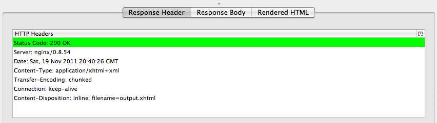
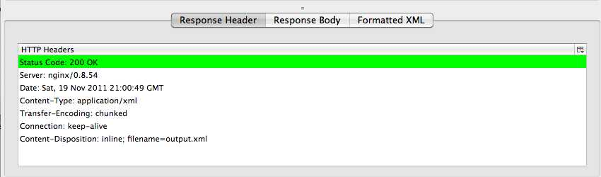
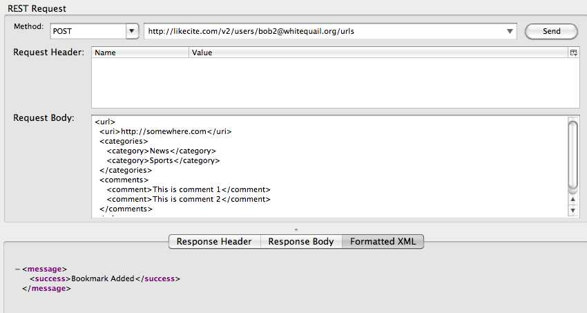
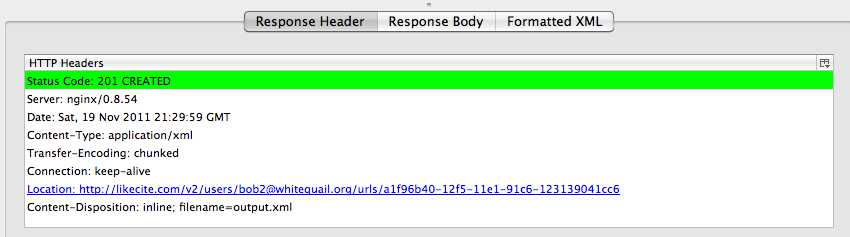
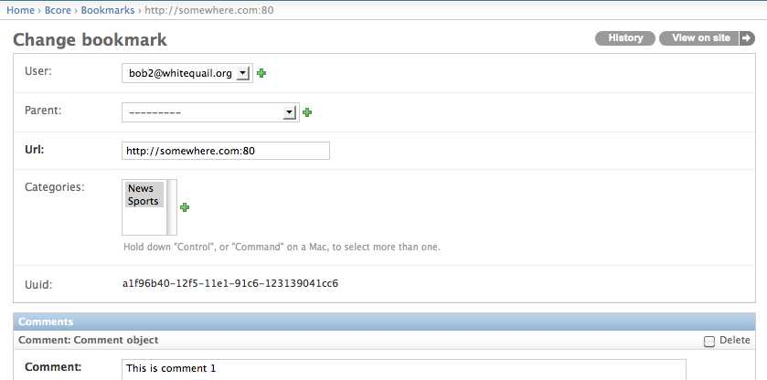

This endpoint lists bookmarks associated with a given user in a browsable xhtml format. This listing also maps urls to a localy unique UUID that can be used by the url detail endpoint.
Usage Example:


Below is a "pretty-printed" representation of the returned xhtml.
<?xml version="1.0" encoding="utf-8"?>
<html xmlns="http://www.w3.org/1999/xhtml">
<head>
<title>User URL List</title>
</head>
<body>
<h1>User URL List</h1>
<ul class="users">
<li class="user">
<a href="http://ec2-50-19-183-238.compute-1.amazonaws.com/v2/users/bob2@whitequail.org/urls/8677436c-12ee-11e1-82aa-123139041cc6" rel="url">http://joejasinski.com:80</a>
</li>
<li class="user">
<a href="http://ec2-50-19-183-238.compute-1.amazonaws.com/v2/users/bob2@whitequail.org/urls/9cc2128c-12ee-11e1-82aa-123139041cc6" rel="url">http://www.jazstudios.com:80</a>
</li>
</ul>
</body>
</html>
This endpoint lists bookmarks associated with a given user in a browsable xml format. Adding a .xml extension to the above url will produce this output in xml format.
Usage Example:



Below is a "pretty-printed" representation of the returned xml.
<?xml version="1.0" encoding="utf-8"?>
<urls>
<url>
<uri>http://ec2-50-19-183-238.compute-1.amazonaws.com/v2/users/bob2@whitequail.org/urls/8677436c-12ee-11e1-82aa-123139041cc6</uri>
<bookmark>http://joejasinski.com:80</bookmark>
</url>
<url>
<uri>http://ec2-50-19-183-238.compute-1.amazonaws.com/v2/users/bob2@whitequail.org/urls/9cc2128c-12ee-11e1-82aa-123139041cc6</uri>
<bookmark>http://www.jazstudios.com:80</bookmark>
</url>
</urls>
POSTing to this endpoint will create a new bookmark resource and associate it with a user. Optional 'comment' and 'category' tags may be added to this xml to associate categories and comments with the new bookmark. Comments are associated with the bookmark via a one-to-may relationship; categories are associated with a bookmark via a many-to-many relationship. If a specified category does not exist, a new category will be created. This service validates the POSTed XML for syntax and for adherence to the RelaxNG spec. Also, the url, category, and comment data is validated upon submission. If the given bookmark already exists, comment and category data may be updated if there are new entries for those.
NOTE: I think an improvement to the specification would be to rename the <url> tag to something like <bookmark>. The current specification lends itself to confusion.
Usage Example:


Below are Django Admin screens exemplifying that a new bookmark was added.
